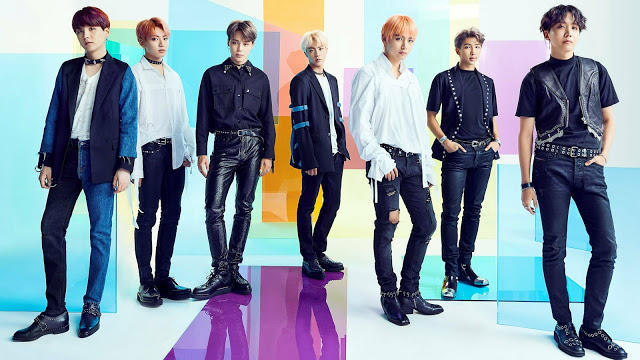
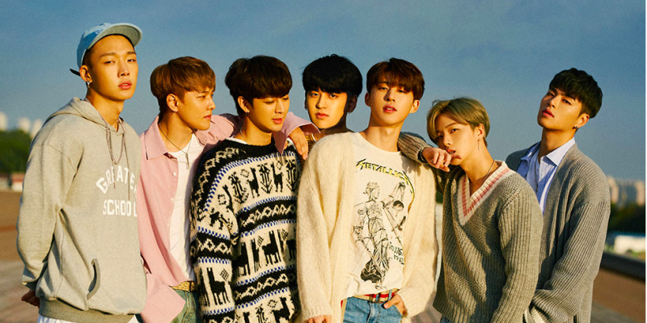
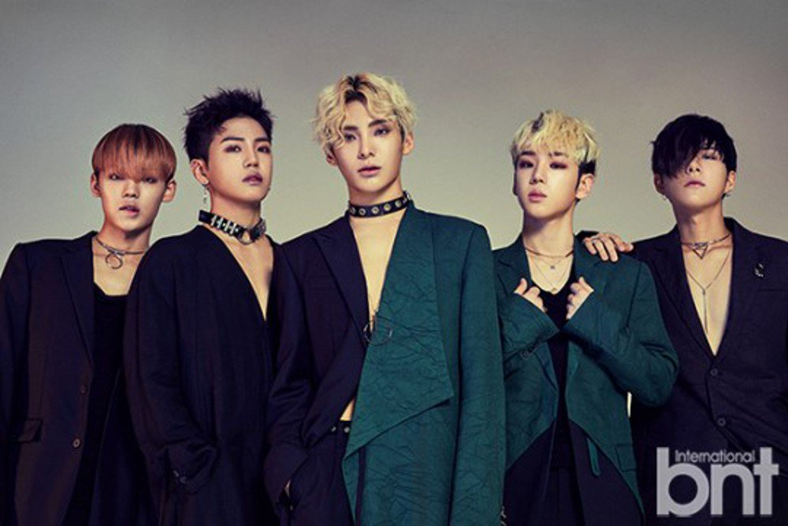

es un género musical que incluye diversos estilos, como la música dance electrónica, hip hop, rap, rock, R&B,
etc, y que se refiere específicamente a la música popular de Corea del Sur.
Y aquí hay una playlist de las mejores canciones de kpop de todos los tiempos, como forma de introducción al genero
playlist de spotify
mis bandas preferidas

BTS
es un grupo de K-pop surcoreano formado por Big Hit Entertainment.
Está compuesto por siete integrantes: Jin, Suga, J-Hope, RM, Jimin,y V
Jungkook.El grupo ha captado la atención de la prensa por su música
y sus actuaciones, no solo en Corea del Sur, sino en todo el mundo

Ikon
Es una boy band de Corea del Sur formado en 2015 por YG Entertainment.este
grupo consiste en 7 miembros. su genero principal o concepto es hip-hop
con un aire juvenil y adaptado a su propia cultura coreana. dos de sus
miembros B.I y Bobby son reconocidos por ser grades raperos y compositores.
